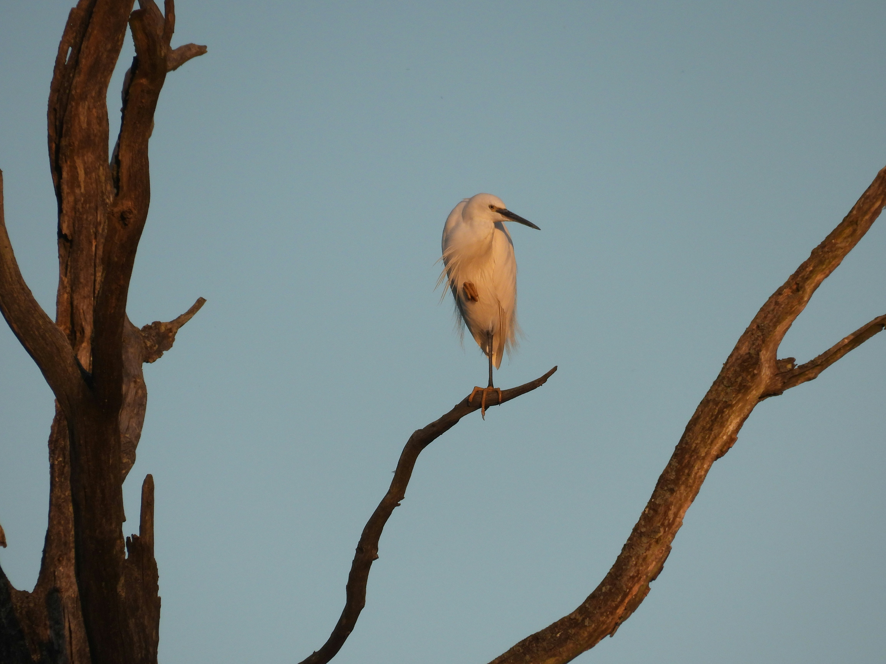

The Little Egret is a graceful white heron with a slender black bill, black legs, and bright yellow feet. It usually forages in shallow water, moving carefully or stirring the bottom to flush out small prey. During the breeding season, adults develop delicate plumes on the head and back. It occurs in freshwater and coastal wetlands and is often seen alone or in small groups. Compared with the similar Cattle Egret, it is distinguished by the combination of features described above. Its preference for marshes, ponds, rivers, lakes, estuaries, mudflats, and coastal wetlands also helps separate it from species that use different habitats. Its characteristic behaviour, including wades through shallow water and uses quick movements to catch prey, provides another useful field clue. Taken together, these differences make it easier to distinguish from similar species when the bird is seen clearly.